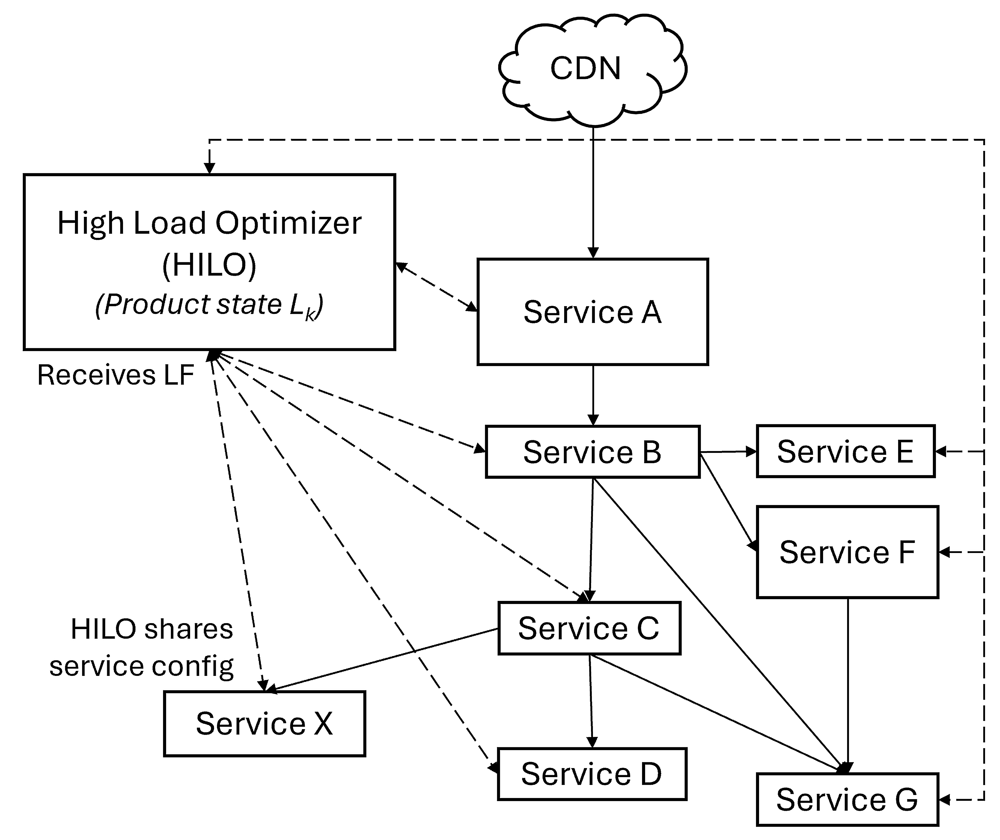
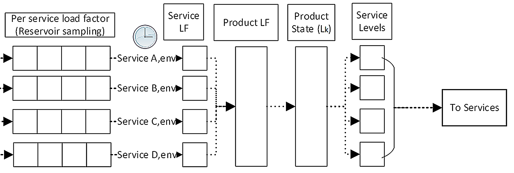
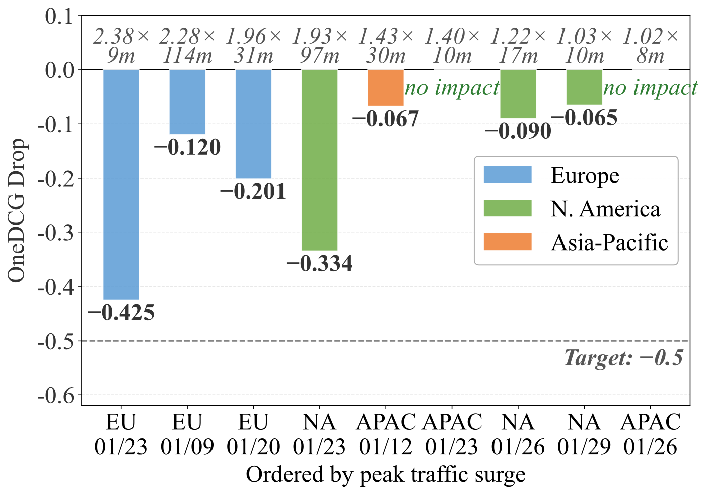

SHARE
When a traffic surge hits and every service throttles and degrades on its own, each service can survive while the product as a whole falls apart. Bing saw exactly this: a shared model-serving service protected itself during a load spike that lasted under 10 minutes, but its callers kept calling at full rate, so latency and errors propagated upstream. OneDCG, Bing's normalized DCG relevance metric, fell by 1.11 points, and result stability dropped from about 90% to about 63% and took over four hours to recover. Microsoft's HiLO moves degradation from the service level to the product level: it defines 6 pre-validated product states ahead of time and, at runtime, only switches between them based on load. In production, across 9 real traffic surges in January 2026, the largest reaching 2.38 times baseline peak, OneDCG dropped by at most 0.425 points, inside the 0.5-point operational target.
Teams running online recommendation or search services should read this, especially those whose ranking stack already includes GPU models or LLMs. GPU capacity is hard to fix by buying more machines, so overload becomes routine, and the paper answers a more basic question than throttling does: what state is the product in during overload, and has that state's quality ever been tested? The core idea in one sentence: each service reports one normalized load value, a central controller aggregates them, picks one state from a small set of pre-tested product states, and tells every service which level to degrade to. It deliberately gives up fine-grained optimality in exchange for predictable, testable quality under overload. There is no new algorithm here; the value is six years of Bing degradation experience and an engineering process you can copy.
What problem is it actually solving?
Take one search request as an example (illustrative). A query passes through a retrieval service, a deep ranking model on GPUs, a reranking service, and possibly an LLM that writes a summary. Traffic suddenly jumps to 1.8 times the usual peak (illustrative).
| Approach (illustrative) | Retrieval | Deep ranking model | Reranking | Final product state |
|---|---|---|---|---|
| Each service degrades on its own | Unchanged, 1000 candidates | Drops requests once GPUs saturate | CPU is high, skips one feature | One of 2^3 combinations nobody has tested |
| HiLO product-level degradation | State L2: one fewer query rewrite | State L2: scores fewer documents | State L2: level 2 | L2, A/B tested in advance |
The problem with the first row is that each of the three services watches its own CPU or queue and decides on its own whether and how much to degrade. The number of combinations grows exponentially with the number of services, and which one the product lands on depends on who crosses a threshold first. Worse, callers and callees do not coordinate: the model service sheds requests to protect itself, the caller does not know and keeps calling at the old rate, so pressure is not reduced but turns into upstream timeouts and retries. The paper calls this pattern, where the trigger is gone but the system takes a long time to return to normal, a metastable failure. The opening incident is one: the spike lasted under 10 minutes, stability took over four hours to recover, and OneDCG kept wobbling for two more days whenever load rose.
Stability here is a Bing monitoring metric: the share of identical queries, repeated in the same time window, that get exactly the same result. When it falls, underlying services are timing out or skipping steps abnormally.

The pipeline: report load, pick a state, send out levels
HiLO's runtime is simple and splits into four steps:
| Step | Who | Output |
|---|---|---|
| Report load value | Each participating service | One normalized number; higher means closer to overload |
| Aggregate | HiLO, every 2 minutes | Product-level load |
| Pick a state | HiLO | One of L0 to L5; L0 is full quality, L5 the deepest degradation |
| Enforce | Each service | Looks up its level for that state and switches |
The key division of labor: complex dependencies are resolved at design time; runtime is just a table lookup. HiLO is not on the request path, makes no per-request decisions and does not infer the call graph online, so its own cost is small: a 2-minute decision period, internal P95 latency under 1 ms, and 64 CPU cores per region. Below we take apart the load value, the product states, and how the states are built.

Why does each service report only one load value?
Services bottleneck in completely different places. The paper's experience: network-bound services watch queue length, because CPU can stay low while the network is jammed; CPU-heavy services such as ranking watch CPU utilization; model services watch GPU utilization; some blend CPU with queue length. If the central controller had to understand every signal, it would need a global capacity model, which is not feasible across dozens of services.
So HiLO asks for just one thing: each service picks its own indicator, converts it to a bounded load value, and keeps it monotonic, so higher always means more dangerous. HiLO treats these values only as an ordering of congestion, not as exact capacity numbers. HiLO never sees a single instantaneous reading. Each service's repeated reports are first randomly sampled, keeping a fixed-size sample of the readings over a period, so HiLO gets a summary of that sample and any single odd reading is diluted; and since HiLO decides only every 2 minutes, spikes of a few seconds do not trigger degradation directly.
A worked example (illustrative): retrieval reports 0.6, the ranking model 0.92, reranking 0.75. HiLO does not need to know how many GPUs 0.92 corresponds to. For illustration, take the tightest service as the product load: product load is 0.92, which crosses an L1 threshold of 0.9 (illustrative), so the product switches from L0 to L1. HiLO uses only how high these numbers are and never converts them into machine counts. The paper notes an easily misread detail: traffic at 1 times baseline peak does not mean load at 100%, because of headroom and changing query mix. That is why HiLO follows load values rather than the traffic curve.
Product states: a small set of pre-tested combinations
Product states are the core of HiLO. Each state maps every service to a fixed level, such as turning off some features, taking a simpler execution path, reducing fan-out, or switching to a cheaper model. States are partially ordered by severity: higher states reclaim more capacity and lose more quality, but every loss was measured before launch. Bing uses 6 states per scenario, and each service implements 2 to 6 levels depending on how flexible it is.
Why not give every feature its own switch, as Meta's DefCon does? With many switches the combinations cannot all be tested, and product behavior is implicitly determined by how the switches interact. HiLO squeezes the possible online behavior into 6 states, each of which can be tested end to end and A/B tested. The authors admit the cost is coarser control. In their experience, cutting levels finer does not make each level reclaim meaningfully more capacity, nor does it reclaim capacity faster.
For GPU models the paper lists degradation actions from mild to severe: fewer multi-query rewrites (the several queries one request fans out to), fewer documents scored, longer cache expiry, fewer model layers, and skipping the model entirely. It deliberately avoids a per-request classifier that routes between big and small models: the big model is always used normally and everything switches to a cheaper variant together only during overload, so normal-time quality loses nothing.
There are a few runtime safety rules. As load rises, HiLO only moves toward stricter states. After load falls, the product does not jump straight back to full quality; operators configure the recovery pace. Slower is more stable but returns to full quality later; faster recovers sooner but may get knocked down again right after switching back, so states bounce back and forth. Each service enforces the stricter of HiLO's assigned level and its own locally chosen level, so if HiLO goes down, services fall back to their old local degradation and availability is unaffected.
How are the states built?
The runtime is simple because the cost moves to design time, in three phases.
In phase one, each service finds its own degradable actions. The owners list degradable actions and estimate how much each lowers the load value and how much quality it costs. The more often an action runs, the more capacity replacing it saves; lower-priority actions go into the shallower levels first. Once actions are grouped into levels, service-local A/B tests check the estimates.
In phase two, dependencies are resolved. Some callees cannot save capacity themselves and need their callers to call less often or call a cheaper variant. The two sides then write "call less" into the caller's levels and test again jointly. That is what Figure 5 shows: one state switch changes not only a service's own behavior but also how it calls downstream.
In phase three, product owners assemble the levels into L0 to L5. They first run them on test traffic: a new state is registered in HiLO as a separate test scenario, the frontend tags test requests or a small forked copy of production requests with that scenario, and HiLO applies the candidate state only to tagged requests, so real users are unaffected. After that they are A/B tested on real traffic, typically at 0.5% for 1 to 3 days before moving to 1% and 5%. Candidate states that cause unintended experiences or push user metrics past targets are dropped or adjusted.
A product-level survival goal decides how much each level must save. If the goal is "survive 2 times baseline peak without throttling", each service works out how many levels it needs and how much each level must cut its load value. Different search verticals (web, images, video) are separate scenarios and can sit in different states at once; within one vertical, the frontend also tags requests as high, medium or low priority, and low-priority requests are degraded first.
How does it do in production?
Start with the headline result. In January 2026 HiLO covered all Bing datacenters and handled 9 real traffic surges that crossed the overload threshold, the strongest at 2.38 times baseline peak. Availability stayed above 99.95% throughout, which means degradation did not come at the price of dropping requests.

In every surge, the time spent degraded was shorter than the overload itself. This means HiLO degrades only while the load value is over the line, and runs at full quality during the part of the overload that headroom can absorb. In a separate model-induced overload, OneDCG dropped only 0.14 points, compared with 1.11 points in the opening incident.
The comparison without HiLO comes from capacity tests: synthetic traffic is ramped slowly to about 2 times baseline peak, and in the control group services still degrade under their local policies.
| Datacenter | Without HiLO: peak | Without HiLO: OneDCG change | With HiLO: peak | With HiLO: OneDCG change |
|---|---|---|---|---|
| Asia-Pacific | 2.13x | -0.05 | 2.06x | 0 |
| EU | 2.06x | -0.02 | 2.16x | 0 |
The gap looks small, and the authors admit capacity tests are short with a gentle ramp, so they are less representative than real overload. The no-result rate is more convincing: without HiLO, the share of queries for which backends returned nothing was consistently higher, and in the Asia-Pacific datacenter it shot up toward the end of the test.
The paper breaks down what degradation saves and costs for one deep ranking model:
| State | Action | Model call volume | Per-call latency | OneDCG impact |
|---|---|---|---|---|
| L1 | Fewer query rewrites and documents | about -3% | unchanged | under 0.1 |
| L3 | Same, stronger | about -13% | unchanged | under 0.1 |
| L5 | Plus layer reduction | about -29% | about -12% | 0.1 to 0.25 |
The table shows that cutting upstream calls is the cheapest first step, and the first three levels barely hurt quality; layer reduction comes only later. For comparison, skipping or throttling this model outright costs far more than 0.5 OneDCG points. Graduated degradation is much better than switching the model off, a conclusion ranking teams can borrow directly. Note that the layer-reduction level has been validated but is not yet in production.
The user-facing A/B results are candid. L1 and L2 show no visible effect on short-term DAU. But results contain less new content: Bing's metric for how often very fresh content appears (SuperFresh Rate) drops 15.21% on desktop at L2; on mobile at L1 the query reformulation rate rises 3.49%, meaning users more often rephrase because the first search did not find what they wanted.
Limitations as I see them
First, design-time cost is high. Each service must find degradable actions, quantify them and test them with upstream and downstream teams; cross-team coordination often takes weeks to months. The paper's example is a service with over 90,000 sub-workflows that took three months of analysis alone. Without a dedicated central team and executive sponsorship it is hard to push through.
Second, holding OneDCG is not the same as holding user experience. Content freshness falls 14% to 15% at L2, and the authors say freshness and engagement fall further at deeper states. If levels are designed around one headline metric, losses on other dimensions are easy to miss.
Third, state oscillation is not solved. While one datacenter was offline for over 30 hours of maintenance, another lacked GPU capacity for a model, and its state bounced between degradation and recovery until extra model capacity was added hours later. HiLO held quality, but it cannot fill a capacity gap by itself.
How a recommendation or search team could try this
- Have every online service report one normalized, monotonic load value, observe only, no control yet. Success test: in past overloads, would this value have shown the problem early?
- Pick the one or two tightest stages, usually the GPU ranking model, and design 3 degradation levels: score fewer candidates, drop one retrieval branch, switch to a smaller model. Measure each level's savings and quality loss with offline evaluation plus a small A/B.
- Assemble the levels into 3 or 4 product states behind a central controller that escalates freely but recovers slowly, keeping local service degradation as a fallback. Load-test at 2 times peak to check that the headline metric loss stays within budget.
- Log the current state on every impression, slice metrics by state after each overload event, then decide whether to extend to more services.
Bottom line
Quality during overload should not be whatever falls out of many services degrading independently; it should be a pre-tested product state you can name.
| Dimension | Assessment |
|---|---|
| Problem importance | High. Once GPU models sit in the online path, overload is routine and nobody owning product-level quality is a real problem |
| Method novelty | Medium. Brownout (automatically dimming optional components inside one application based on latency) and DefCon (feature-degradation switches flipped by operators) already exist; the novelty is squeezing behavior into a few states and resolving dependencies at design time |
| Evidence | Medium-high. All Bing production data with real incidents and comparisons, though the control is only short capacity tests |
| Engineering cost | High. Cheap at runtime, but design time needs heavy cross-team work |
| Worth trying | Yes. Start with graduated degradation on your most expensive model service, where the payoff is most direct |
How did this read for you?
Hoot made a note. Thanks for the feedback.
One tap, no sign-in; tap again to undo. Only anonymous counts are kept, never who you are.
Discussion
Add experiment details, reproduction notes or a different take. Requires a GitHub sign-in.
Loading the discussion…